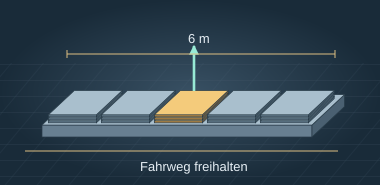
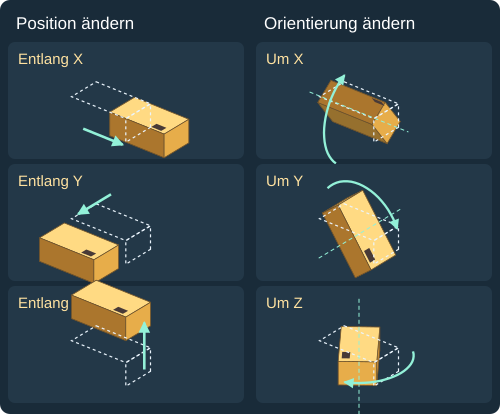
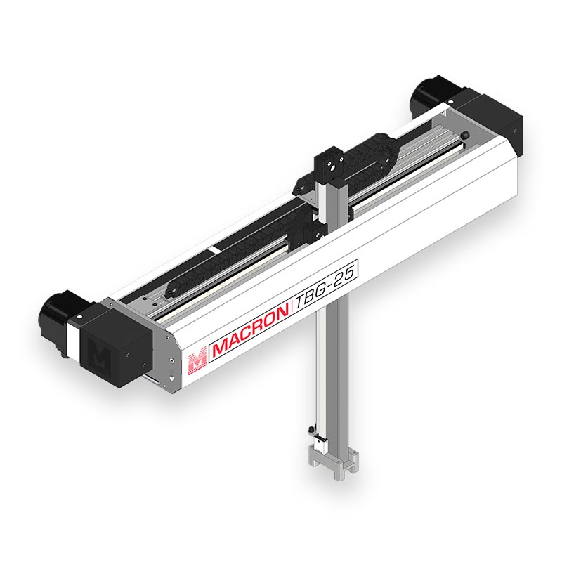
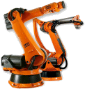
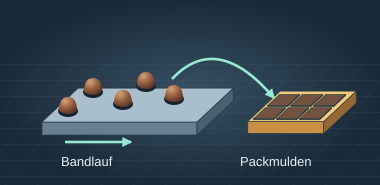
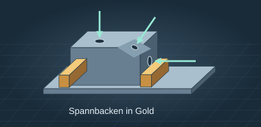
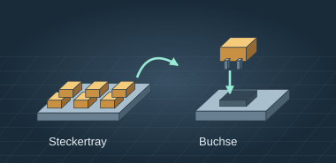

A · Blechlager bedienen

Auf einer sechs Meter langen Ablage liegen Blechtafeln in mehreren Fächern. Die Tafeln werden von oben entnommen. Der Fahrweg vor dem Lager muss frei bleiben.
Robotik · Modul 1
Achsarten, Freiheitsgrade und Arbeitsräume serieller und paralleler Roboterbauformen
Robotersystem
Ein Industrieroboter ist eine programmierbare Maschine, die ein Werkzeug über mehrere Achsen bewegt. In der Fertigung kann er zum Beispiel ein Bauteil mit einem Greifer umsetzen oder mit einer Düse eine Klebenaht auftragen. Beim Kleben zählt beides: Die Spitze der Düse muss der Naht folgen und die Düse im passenden Winkel zur Oberfläche stehen. Wie der Roboter diese Bewegungen ausführt, hängt vom Aufbau seiner Glieder und Gelenke ab.
Vom Bewegungsauftrag bis zum Werkstück: Wähle einen markierten Begriff, um seine Funktion am Roboter zu sehen.
Das Gestell verbindet den Roboter mit dem Boden und nimmt die Kräfte des Arms auf.
Dieses starre Armstück verbindet Schulter und Ellenbogen. Dreht sich die Schulter, bewegt sich das Glied mit.
Am Ellenbogen treffen zwei Glieder aufeinander. Das Drehgelenk lässt genau eine Relativbewegung zu: eine Drehung um seine Achse.
Die gestrichelte Linie ist die gedachte Drehachse des Ellenbogens. Der Antrieb verändert den Gelenkwinkel um diese Linie. Der gebogene Pfeil zeigt die Drehrichtung.
Der Greifer ist das Werkzeug am Ende des Arms. Seine Finger nehmen das Werkstück auf.
Die Steuerung gibt die Sollbewegung vor. Der Antrieb bewegt das Gelenk. Ein Geber meldet die gemessene Stellung zurück.
Stell dir vor, du hältst einen kleinen Metallblock mit einer markierten Ecke in der Hand. Du möchtest ihn so in eine Aufnahme legen, dass die Markierung am richtigen Platz liegt und die richtige Seite nach oben zeigt.

Positionierung. Für seine Mitte brauchst du drei Angaben: wie weit rechts, wie weit nach vorne und wie weit nach oben. Auch eine schräge Verschiebung lässt sich aus diesen drei Richtungen zusammensetzen.
Orientierung. Halte seine Mitte am selben Ort. Du kannst den Block um X kippen, um Y kippen oder um Z drehen. Die markierte Ecke bewegt sich dabei mit. Selbst wenn die Mitte genau über der Aufnahme liegt, kann der Block noch verdreht sein.
Ein sechsachsiger Knickarm trägt Klebstoff auf ein Gehäuse auf. Die Naht führt vom Deckel über eine Rundung auf die Seitenwand. Die Düsenspitze folgt der Naht (Positionierung). Gleichzeitig kippt der Roboter die Düse, damit ihr Winkel zur Oberfläche gleich bleibt (Orientierung).
Die Anzahl der Achsen allein verrät noch nicht, wie sich das Werkzeug bewegt. Verfolge in beiden Bildern den mechanischen Weg vom Gestell zum türkis markierten Werkzeug.
| Merkmal | Serielle Kinematik | Parallelkinematik |
|---|---|---|
| Zugang | Der Knickarm kann das Werkstück von oben, seitlich oder schräg anfahren. | Beim klassischen dreiachsigen Delta bleibt die Plattform gleich ausgerichtet. Ein senkrechter Prüfstift lässt sich daher nicht in eine seitliche Bohrung einschwenken. |
| Dynamik | Die Schulter bewegt die nachfolgenden Glieder mit. | Die geringe bewegte Masse ermöglicht kurze Greifzyklen. |
| Belastung | Bei großer Ausladung steigt das Moment an der Schulter. | Mehrere Ketten leiten die Werkzeugkraft gemeinsam ins Gestell. |
| Steifigkeit | Bei weit ausgestrecktem Arm kann die Werkzeugspitze unter seitlicher Kraft stärker nachgeben. | Mehrere Ketten stützen die Plattform. Dadurch kann sie unter derselben Kraft weniger nachgeben. |
Die Bewertung vergleicht typische Knickarm- und Delta-Roboter für die genannten Aufgaben.
Bauformen und Arbeitsräume
Der Arbeitsraum umfasst die erreichbaren Positionen eines festgelegten Werkzeugpunkts. Öffne eine Bauform. Das goldene Volumen zeigt erreichbare Werkzeugpositionen. Drehe die Ansicht, um Höhe, Tiefe und Aussparungen zu erkennen. Die genaue Form hängt von Achswegen, Gelenkgrenzen und Werkzeug ab.

PortalroboterDetails anzeigenDrei aufeinander aufbauende Linearachsen verfahren in X, Y und Z. Ohne zusätzliche Drehachse bleibt der Greifer gleich ausgerichtet.
Typische Anwendungen
Wie lassen sich Längsfahrt, Querfahrt und Hub im Film unterscheiden?
 SCARADetails anzeigen
SCARADetails anzeigenZwei Drehachsen schwenken den Arm in der Ebene. Die Hubachse senkt den Greifer. Eine vierte Achse kann das Werkstück um die Vertikale drehen.
Typische Anwendungen
Welche Bewegung transportiert die Batterie über die Fläche, welche setzt sie ab?

KnickarmroboterDetails anzeigenSechs Drehgelenke bilden eine Kette. Die Stellung des Arms und die Drehung des Handgelenks bestimmen zusammen Position und Orientierung des Werkzeugs.
Typische Anwendungen
Wie muss sich das Handgelenk bewegen, damit der Brenner im gewünschten Winkel an der Naht bleibt?
 DeltaroboterDetails anzeigen
DeltaroboterDetails anzeigenDrei rotatorische Hauptantriebe bewegen mehrere Arme gemeinsam. Beim klassischen dreiachsigen Delta verschiebt sich die Plattform in X, Y und Z bei gleichbleibender Orientierung.
Typische Anwendungen
Ab 0:55 werden Varianten verglichen. Was gewinnt der Greifer durch eine vierte Achse?
Abschlussaufgabe
Wählt für jede der vier Stationen eine geeignete Roboterbauform und begründet eure Wahl kurz anhand der Anforderungen.

Auf einer sechs Meter langen Ablage liegen Blechtafeln in mehreren Fächern. Die Tafeln werden von oben entnommen. Der Fahrweg vor dem Lager muss frei bleiben.

Leichte Pralinen laufen in dichter Folge auf einem Band ein. Sie sollen innerhalb einer kleinen Fläche in Schachteln umgesetzt werden. Entscheidend ist, dass der Greifer mit dem Bandtakt Schritt hält.

Das Gehäuse bleibt eingespannt. Ein Prüfstift muss von oben, seitlich und schräg in drei Bohrungen einfahren. Die Spannbacken dürfen beim Anfahren nicht berührt werden.

An einem kompakten Montageplatz liegen Stecker in einem Tray. Jeder Stecker wird an eine andere Tischposition gebracht, um seine Hochachse ausgerichtet und senkrecht in die passende Buchse gesteckt.